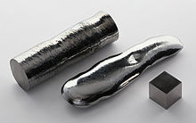

Rhenium
|  | |||||||||||||||||||||||||||||||||||||||||||||||||||||||||||||||||||||||||||||||||||||||||||||||||||||||||||||||||||||||||||||||||||||||||||||||||||||||||||||||||||||||||||||||||||||||||||||||||||||||||||||||||||||||||||||||||||||
| General properties | |||||||||||||||||||||||||||||||||||||||||||||||||||||||||||||||||||||||||||||||||||||||||||||||||||||||||||||||||||||||||||||||||||||||||||||||||||||||||||||||||||||||||||||||||||||||||||||||||||||||||||||||||||||||||||||||||||||
|---|---|---|---|---|---|---|---|---|---|---|---|---|---|---|---|---|---|---|---|---|---|---|---|---|---|---|---|---|---|---|---|---|---|---|---|---|---|---|---|---|---|---|---|---|---|---|---|---|---|---|---|---|---|---|---|---|---|---|---|---|---|---|---|---|---|---|---|---|---|---|---|---|---|---|---|---|---|---|---|---|---|---|---|---|---|---|---|---|---|---|---|---|---|---|---|---|---|---|---|---|---|---|---|---|---|---|---|---|---|---|---|---|---|---|---|---|---|---|---|---|---|---|---|---|---|---|---|---|---|---|---|---|---|---|---|---|---|---|---|---|---|---|---|---|---|---|---|---|---|---|---|---|---|---|---|---|---|---|---|---|---|---|---|---|---|---|---|---|---|---|---|---|---|---|---|---|---|---|---|---|---|---|---|---|---|---|---|---|---|---|---|---|---|---|---|---|---|---|---|---|---|---|---|---|---|---|---|---|---|---|---|---|---|---|---|---|---|---|---|---|---|---|---|---|---|---|---|---|---|
| Name, symbol | rhenium, Re | ||||||||||||||||||||||||||||||||||||||||||||||||||||||||||||||||||||||||||||||||||||||||||||||||||||||||||||||||||||||||||||||||||||||||||||||||||||||||||||||||||||||||||||||||||||||||||||||||||||||||||||||||||||||||||||||||||||
| Pronunciation | /ˈriːniəm/ REE-nee-əm |
||||||||||||||||||||||||||||||||||||||||||||||||||||||||||||||||||||||||||||||||||||||||||||||||||||||||||||||||||||||||||||||||||||||||||||||||||||||||||||||||||||||||||||||||||||||||||||||||||||||||||||||||||||||||||||||||||||
| Appearance | silvery-grayish | ||||||||||||||||||||||||||||||||||||||||||||||||||||||||||||||||||||||||||||||||||||||||||||||||||||||||||||||||||||||||||||||||||||||||||||||||||||||||||||||||||||||||||||||||||||||||||||||||||||||||||||||||||||||||||||||||||||
| Rhenium in the periodic table | |||||||||||||||||||||||||||||||||||||||||||||||||||||||||||||||||||||||||||||||||||||||||||||||||||||||||||||||||||||||||||||||||||||||||||||||||||||||||||||||||||||||||||||||||||||||||||||||||||||||||||||||||||||||||||||||||||||
|
|||||||||||||||||||||||||||||||||||||||||||||||||||||||||||||||||||||||||||||||||||||||||||||||||||||||||||||||||||||||||||||||||||||||||||||||||||||||||||||||||||||||||||||||||||||||||||||||||||||||||||||||||||||||||||||||||||||
| Atomic number | 75 | ||||||||||||||||||||||||||||||||||||||||||||||||||||||||||||||||||||||||||||||||||||||||||||||||||||||||||||||||||||||||||||||||||||||||||||||||||||||||||||||||||||||||||||||||||||||||||||||||||||||||||||||||||||||||||||||||||||
| Standard atomic weight (±) | 186.207(1)[1] | ||||||||||||||||||||||||||||||||||||||||||||||||||||||||||||||||||||||||||||||||||||||||||||||||||||||||||||||||||||||||||||||||||||||||||||||||||||||||||||||||||||||||||||||||||||||||||||||||||||||||||||||||||||||||||||||||||||
| Element category | transition metal | ||||||||||||||||||||||||||||||||||||||||||||||||||||||||||||||||||||||||||||||||||||||||||||||||||||||||||||||||||||||||||||||||||||||||||||||||||||||||||||||||||||||||||||||||||||||||||||||||||||||||||||||||||||||||||||||||||||
| Group, block | group 7, d-block | ||||||||||||||||||||||||||||||||||||||||||||||||||||||||||||||||||||||||||||||||||||||||||||||||||||||||||||||||||||||||||||||||||||||||||||||||||||||||||||||||||||||||||||||||||||||||||||||||||||||||||||||||||||||||||||||||||||
| Period | period 6 | ||||||||||||||||||||||||||||||||||||||||||||||||||||||||||||||||||||||||||||||||||||||||||||||||||||||||||||||||||||||||||||||||||||||||||||||||||||||||||||||||||||||||||||||||||||||||||||||||||||||||||||||||||||||||||||||||||||
| Electron configuration | [Xe] 4f14 5d5 6s2 | ||||||||||||||||||||||||||||||||||||||||||||||||||||||||||||||||||||||||||||||||||||||||||||||||||||||||||||||||||||||||||||||||||||||||||||||||||||||||||||||||||||||||||||||||||||||||||||||||||||||||||||||||||||||||||||||||||||
| per shell | 2, 8, 18, 32, 13, 2 | ||||||||||||||||||||||||||||||||||||||||||||||||||||||||||||||||||||||||||||||||||||||||||||||||||||||||||||||||||||||||||||||||||||||||||||||||||||||||||||||||||||||||||||||||||||||||||||||||||||||||||||||||||||||||||||||||||||
| Physical properties | |||||||||||||||||||||||||||||||||||||||||||||||||||||||||||||||||||||||||||||||||||||||||||||||||||||||||||||||||||||||||||||||||||||||||||||||||||||||||||||||||||||||||||||||||||||||||||||||||||||||||||||||||||||||||||||||||||||
| Phase | solid | ||||||||||||||||||||||||||||||||||||||||||||||||||||||||||||||||||||||||||||||||||||||||||||||||||||||||||||||||||||||||||||||||||||||||||||||||||||||||||||||||||||||||||||||||||||||||||||||||||||||||||||||||||||||||||||||||||||
| Melting point | 3459 K (3186 °C, 5767 °F) | ||||||||||||||||||||||||||||||||||||||||||||||||||||||||||||||||||||||||||||||||||||||||||||||||||||||||||||||||||||||||||||||||||||||||||||||||||||||||||||||||||||||||||||||||||||||||||||||||||||||||||||||||||||||||||||||||||||
| Boiling point | 5869 K (5596 °C, 10105 °F) | ||||||||||||||||||||||||||||||||||||||||||||||||||||||||||||||||||||||||||||||||||||||||||||||||||||||||||||||||||||||||||||||||||||||||||||||||||||||||||||||||||||||||||||||||||||||||||||||||||||||||||||||||||||||||||||||||||||
| Density near r.t. | 21.02 g·cm−3 | ||||||||||||||||||||||||||||||||||||||||||||||||||||||||||||||||||||||||||||||||||||||||||||||||||||||||||||||||||||||||||||||||||||||||||||||||||||||||||||||||||||||||||||||||||||||||||||||||||||||||||||||||||||||||||||||||||||
| when liquid, at m.p. | 18.9 g·cm−3 | ||||||||||||||||||||||||||||||||||||||||||||||||||||||||||||||||||||||||||||||||||||||||||||||||||||||||||||||||||||||||||||||||||||||||||||||||||||||||||||||||||||||||||||||||||||||||||||||||||||||||||||||||||||||||||||||||||||
| Heat of fusion | 60.43 kJ·mol−1 | ||||||||||||||||||||||||||||||||||||||||||||||||||||||||||||||||||||||||||||||||||||||||||||||||||||||||||||||||||||||||||||||||||||||||||||||||||||||||||||||||||||||||||||||||||||||||||||||||||||||||||||||||||||||||||||||||||||
| Heat of vaporization | 704 kJ·mol−1 | ||||||||||||||||||||||||||||||||||||||||||||||||||||||||||||||||||||||||||||||||||||||||||||||||||||||||||||||||||||||||||||||||||||||||||||||||||||||||||||||||||||||||||||||||||||||||||||||||||||||||||||||||||||||||||||||||||||
| Molar heat capacity | 25.48 J·mol−1·K−1 | ||||||||||||||||||||||||||||||||||||||||||||||||||||||||||||||||||||||||||||||||||||||||||||||||||||||||||||||||||||||||||||||||||||||||||||||||||||||||||||||||||||||||||||||||||||||||||||||||||||||||||||||||||||||||||||||||||||
vapor pressure
|
|||||||||||||||||||||||||||||||||||||||||||||||||||||||||||||||||||||||||||||||||||||||||||||||||||||||||||||||||||||||||||||||||||||||||||||||||||||||||||||||||||||||||||||||||||||||||||||||||||||||||||||||||||||||||||||||||||||
| Atomic properties | |||||||||||||||||||||||||||||||||||||||||||||||||||||||||||||||||||||||||||||||||||||||||||||||||||||||||||||||||||||||||||||||||||||||||||||||||||||||||||||||||||||||||||||||||||||||||||||||||||||||||||||||||||||||||||||||||||||
| Oxidation states | 7, 6, 5, 4, 3, 2, 1, 0, −1 (a mildly acidic oxide) | ||||||||||||||||||||||||||||||||||||||||||||||||||||||||||||||||||||||||||||||||||||||||||||||||||||||||||||||||||||||||||||||||||||||||||||||||||||||||||||||||||||||||||||||||||||||||||||||||||||||||||||||||||||||||||||||||||||
| Electronegativity | Pauling scale: 1.9 | ||||||||||||||||||||||||||||||||||||||||||||||||||||||||||||||||||||||||||||||||||||||||||||||||||||||||||||||||||||||||||||||||||||||||||||||||||||||||||||||||||||||||||||||||||||||||||||||||||||||||||||||||||||||||||||||||||||
| Ionization energies | 1st: 760 kJ·mol−1 2nd: 1260 kJ·mol−1 3rd: 2510 kJ·mol−1 (more) |
||||||||||||||||||||||||||||||||||||||||||||||||||||||||||||||||||||||||||||||||||||||||||||||||||||||||||||||||||||||||||||||||||||||||||||||||||||||||||||||||||||||||||||||||||||||||||||||||||||||||||||||||||||||||||||||||||||
| Atomic radius | empirical: 137 pm | ||||||||||||||||||||||||||||||||||||||||||||||||||||||||||||||||||||||||||||||||||||||||||||||||||||||||||||||||||||||||||||||||||||||||||||||||||||||||||||||||||||||||||||||||||||||||||||||||||||||||||||||||||||||||||||||||||||
| Covalent radius | 151±7 pm | ||||||||||||||||||||||||||||||||||||||||||||||||||||||||||||||||||||||||||||||||||||||||||||||||||||||||||||||||||||||||||||||||||||||||||||||||||||||||||||||||||||||||||||||||||||||||||||||||||||||||||||||||||||||||||||||||||||
| Miscellanea | |||||||||||||||||||||||||||||||||||||||||||||||||||||||||||||||||||||||||||||||||||||||||||||||||||||||||||||||||||||||||||||||||||||||||||||||||||||||||||||||||||||||||||||||||||||||||||||||||||||||||||||||||||||||||||||||||||||
| Crystal structure | hexagonal close-packed (hcp)
|
||||||||||||||||||||||||||||||||||||||||||||||||||||||||||||||||||||||||||||||||||||||||||||||||||||||||||||||||||||||||||||||||||||||||||||||||||||||||||||||||||||||||||||||||||||||||||||||||||||||||||||||||||||||||||||||||||||
| Speed of sound thin rod | 4700 m·s−1 (at 20 °C) | ||||||||||||||||||||||||||||||||||||||||||||||||||||||||||||||||||||||||||||||||||||||||||||||||||||||||||||||||||||||||||||||||||||||||||||||||||||||||||||||||||||||||||||||||||||||||||||||||||||||||||||||||||||||||||||||||||||
| Thermal expansion | 6.2 µm·m−1·K−1 | ||||||||||||||||||||||||||||||||||||||||||||||||||||||||||||||||||||||||||||||||||||||||||||||||||||||||||||||||||||||||||||||||||||||||||||||||||||||||||||||||||||||||||||||||||||||||||||||||||||||||||||||||||||||||||||||||||||
| Thermal conductivity | 48.0 W·m−1·K−1 | ||||||||||||||||||||||||||||||||||||||||||||||||||||||||||||||||||||||||||||||||||||||||||||||||||||||||||||||||||||||||||||||||||||||||||||||||||||||||||||||||||||||||||||||||||||||||||||||||||||||||||||||||||||||||||||||||||||
| Electrical resistivity | 193 nΩ·m (at 20 °C) | ||||||||||||||||||||||||||||||||||||||||||||||||||||||||||||||||||||||||||||||||||||||||||||||||||||||||||||||||||||||||||||||||||||||||||||||||||||||||||||||||||||||||||||||||||||||||||||||||||||||||||||||||||||||||||||||||||||
| Magnetic ordering | paramagnetic[2] | ||||||||||||||||||||||||||||||||||||||||||||||||||||||||||||||||||||||||||||||||||||||||||||||||||||||||||||||||||||||||||||||||||||||||||||||||||||||||||||||||||||||||||||||||||||||||||||||||||||||||||||||||||||||||||||||||||||
| Young's modulus | 463 GPa | ||||||||||||||||||||||||||||||||||||||||||||||||||||||||||||||||||||||||||||||||||||||||||||||||||||||||||||||||||||||||||||||||||||||||||||||||||||||||||||||||||||||||||||||||||||||||||||||||||||||||||||||||||||||||||||||||||||
| Shear modulus | 178 GPa | ||||||||||||||||||||||||||||||||||||||||||||||||||||||||||||||||||||||||||||||||||||||||||||||||||||||||||||||||||||||||||||||||||||||||||||||||||||||||||||||||||||||||||||||||||||||||||||||||||||||||||||||||||||||||||||||||||||
| Bulk modulus | 370 GPa | ||||||||||||||||||||||||||||||||||||||||||||||||||||||||||||||||||||||||||||||||||||||||||||||||||||||||||||||||||||||||||||||||||||||||||||||||||||||||||||||||||||||||||||||||||||||||||||||||||||||||||||||||||||||||||||||||||||
| Poisson ratio | 0.30 | ||||||||||||||||||||||||||||||||||||||||||||||||||||||||||||||||||||||||||||||||||||||||||||||||||||||||||||||||||||||||||||||||||||||||||||||||||||||||||||||||||||||||||||||||||||||||||||||||||||||||||||||||||||||||||||||||||||
| Mohs hardness | 7.0 | ||||||||||||||||||||||||||||||||||||||||||||||||||||||||||||||||||||||||||||||||||||||||||||||||||||||||||||||||||||||||||||||||||||||||||||||||||||||||||||||||||||||||||||||||||||||||||||||||||||||||||||||||||||||||||||||||||||
| Vickers hardness | 1350-7850 MPa | ||||||||||||||||||||||||||||||||||||||||||||||||||||||||||||||||||||||||||||||||||||||||||||||||||||||||||||||||||||||||||||||||||||||||||||||||||||||||||||||||||||||||||||||||||||||||||||||||||||||||||||||||||||||||||||||||||||
| Brinell hardness | 1320–2500 MPa | ||||||||||||||||||||||||||||||||||||||||||||||||||||||||||||||||||||||||||||||||||||||||||||||||||||||||||||||||||||||||||||||||||||||||||||||||||||||||||||||||||||||||||||||||||||||||||||||||||||||||||||||||||||||||||||||||||||
| CAS Registry Number | 7440-15-5 | ||||||||||||||||||||||||||||||||||||||||||||||||||||||||||||||||||||||||||||||||||||||||||||||||||||||||||||||||||||||||||||||||||||||||||||||||||||||||||||||||||||||||||||||||||||||||||||||||||||||||||||||||||||||||||||||||||||
| History | |||||||||||||||||||||||||||||||||||||||||||||||||||||||||||||||||||||||||||||||||||||||||||||||||||||||||||||||||||||||||||||||||||||||||||||||||||||||||||||||||||||||||||||||||||||||||||||||||||||||||||||||||||||||||||||||||||||
| Naming | after the river Rhine (German: Rhein) | ||||||||||||||||||||||||||||||||||||||||||||||||||||||||||||||||||||||||||||||||||||||||||||||||||||||||||||||||||||||||||||||||||||||||||||||||||||||||||||||||||||||||||||||||||||||||||||||||||||||||||||||||||||||||||||||||||||
| Discovery and first isolation | Masataka Ogawa (1908) | ||||||||||||||||||||||||||||||||||||||||||||||||||||||||||||||||||||||||||||||||||||||||||||||||||||||||||||||||||||||||||||||||||||||||||||||||||||||||||||||||||||||||||||||||||||||||||||||||||||||||||||||||||||||||||||||||||||
| Named by | Walter Noddack, Ida Noddack, Otto Berg (1922) | ||||||||||||||||||||||||||||||||||||||||||||||||||||||||||||||||||||||||||||||||||||||||||||||||||||||||||||||||||||||||||||||||||||||||||||||||||||||||||||||||||||||||||||||||||||||||||||||||||||||||||||||||||||||||||||||||||||
| Most stable isotopes | |||||||||||||||||||||||||||||||||||||||||||||||||||||||||||||||||||||||||||||||||||||||||||||||||||||||||||||||||||||||||||||||||||||||||||||||||||||||||||||||||||||||||||||||||||||||||||||||||||||||||||||||||||||||||||||||||||||
|
|||||||||||||||||||||||||||||||||||||||||||||||||||||||||||||||||||||||||||||||||||||||||||||||||||||||||||||||||||||||||||||||||||||||||||||||||||||||||||||||||||||||||||||||||||||||||||||||||||||||||||||||||||||||||||||||||||||
| Decay modes in parentheses are predicted, but have not yet been observed | |||||||||||||||||||||||||||||||||||||||||||||||||||||||||||||||||||||||||||||||||||||||||||||||||||||||||||||||||||||||||||||||||||||||||||||||||||||||||||||||||||||||||||||||||||||||||||||||||||||||||||||||||||||||||||||||||||||
{kind=link}
Rhenium is a chemical element with symbol Re and atomic number 75. It is a silvery-white, heavy, third-row transition metal in group 7 of the periodic table. With an estimated average concentration of 1 part per billion (ppb), rhenium is one of the rarest elements in the Earth's crust. The free element has the third-highest melting point and highest boiling point of any element, at 5,869 K (10,105 °F). Rhenium resembles manganese and technetium chemically and is obtained as a by-product of molybdenum and copper ore's extraction and refinement. Rhenium shows in its compounds a wide variety of oxidation states ranging from −1 to +7.
Discovered in 1925, rhenium was the last stable element to be discovered. It was named after the river Rhine in Europe.
Nickel-based superalloys of rhenium are used in the combustion chambers, turbine blades, and exhaust nozzles of jet engines. These alloys contain up to 6% rhenium, making jet engine construction the largest single use for the element, with the chemical industry's catalytic uses being next-most important. Because of the low availability relative to demand, rhenium is among the most expensive of metals, with an average price of approximately US$2,750 per kilogram (US$85.53 per troy ounce) as of April 2015; it is also of critical strategic military importance, for its use in high performance military jet and rocket engines.[3]
Contents
[hide]History[edit]
Rhenium (Latin: Rhenus meaning: "Rhine")[4] was the last-discovered of the elements that have a stable isotope (other new elements discovered in nature since then, such as neptunium and plutonium, are radioactive).[5] The existence of a yet-undiscovered element at this position in the periodic table had been first predicted by Dmitry Mendeleev. Other calculated information was obtained by Henry Moseley in 1914.[6] It is generally considered to have been discovered by Walter Noddack, Ida Tacke, and Otto Berg in Germany. In 1925 they reported that they had detected the element in platinum ore and in the mineral columbite. They also found rhenium in gadolinite and molybdenite.[7] In 1928 they were able to extract 1 g of the element by processing 660 kg of molybdenite.[8] It was estimated in 1968 that 75% of the rhenium metal in the United States was used for research and the development of refractory metal alloys. It took several years from that point before the superalloys became widely used.[9][10]
In 1908, Japanese chemist Masataka Ogawa announced that he had discovered the 43rd element and named it nipponium (Np) after Japan (Nippon in Japanese). However, later analysis indicated the presence of rhenium (element 75), not element 43.[11] The symbol Np was later used for the element neptunium.
Characteristics[edit]
Rhenium is a silvery-white metal with one of the highest melting points of all elements, exceeded by only tungsten and carbon. It also has the highest boiling point of all elements. It is also one of the densest, exceeded only by platinum, iridium and osmium. Rhenium has a hexagonal close-packed crystal structure, with lattice parameters a = 276.1 pm and c = 445.6 pm.[12]
Its usual commercial form is a powder, but this element can be consolidated by pressing and sintering in a vacuum or hydrogen atmosphere. This procedure yields a compact solid having a density above 90% of the density of the metal. When annealed this metal is very ductile and can be bent, coiled, or rolled.[13] Rhenium-molybdenum alloys are superconductive at 10 K; tungsten-rhenium alloys are also superconductive[14] around 4–8 K, depending on the alloy. Rhenium metal superconducts at 1.697 ± 0.006 K.[15] [16]
In bulk form and at room temperature and atmospheric pressure, the element resists alkalis, sulfuric acid, hydrochloric acid, dilute, but not concentrated nitric acid, and aqua regia.
Isotopes[edit]
Rhenium has one stable isotope, rhenium-185, which nevertheless occurs in minority abundance, a situation found only in two other elements (indium and tellurium). Naturally occurring rhenium is 37.4% 185Re, which is stable, and 62.6% 187Re, which is unstable but has a very long half-life (~1010 years). This lifetime can be greatly affected by the charge state of rhenium atom.[17][18] The beta decay of 187Re is used for rhenium-osmium dating of ores. The available energy for this beta decay (2.6 keV) is one of the lowest known among all radionuclides. The isotope rhenium-186m is notable as being one of the longest lived metastable isotopes with a half-life of around 200,000 years. There are twenty-five other recognized radioactive isotopes of rhenium.[19]
Compounds[edit]
Rhenium compounds are known for all the oxidation states between −3 and +7 except −2. The oxidation states +7, +6, +4, and +2 are the most common.[20] Rhenium is most available commercially as salts of perrhenate, including sodium and ammonium perrhenates. These are white, water-soluble compounds.[21]
Halides and oxyhalides[edit]
The most common rhenium chlorides are ReCl6, ReCl5, ReCl4, and ReCl3.[22] The structures of these compounds often feature extensive Re-Re bonding, which is characteristic of this metal in oxidation states lower than VII. Salts of [Re2Cl8]2− feature a quadruple metal-metal bond. Although the highest rhenium chloride features Re(VI), fluorine gives the d0 Re(VII) derivative rhenium heptafluoride. Bromides and iodides of rhenium are also well known.
Like tungsten and molybdenum, with which it shares chemical similarities, rhenium forms a variety of oxyhalides. The oxychlorides are most common, and include ReOCl4, ReOCl3.
Oxides and sulfides[edit]
{kind=link}
The most common oxide is the volatile colourless Re2O7. Rhenium trioxide ReO3 adopts a perovskite-like structure. Other oxides include Re2O5, ReO2, and Re2O3.[22] The sulfides are ReS2 and Re2S7. Perrhenate salts can be converted to tetrathioperrhenate by the action of ammonium hydrosulfide.[23]
Other compounds[edit]
Rhenium diboride (ReB2) is a hard compound having the hardness similar to that of tungsten carbide, silicon carbide, titanium diboride or zirconium diboride.[24]
Organorhenium compounds[edit]
Dirhenium decacarbonyl is the most common entry to organorhenium chemistry. Its reduction with sodium amalgam gives Na[Re(CO)5] with rhenium in the formal oxidation state −1.[25] Dirhenium decacarbonyl can be oxidised with bromine to bromopentacarbonylrhenium(I):[26]
- Re2(CO)10 + Br2 → 2 Re(CO)5Br
Reduction of this pentacarbonyl with zinc and acetic acid gives pentacarbonylhydridorhenium:[27]
- Re(CO)5Br + Zn + HOAc → Re(CO)5H + ZnBr(OAc)
Methylrhenium trioxide ("MTO"), CH3ReO3 is a volatile, colourless solid has been used as a catalyst in some laboratory experiments. It can be prepared by many routes, a typical method is the reaction of Re2O7 and tetramethyltin:
- Re2O7 + (CH3)4Sn → CH3ReO3 + (CH3)3SnOReO3
Analogous alkyl and aryl derivatives are known. MTO catalyses for the oxidations with hydrogen peroxide. Terminal alkynes yield the corresponding acid or ester, internal alkynes yield diketones, and alkenes give epoxides. MTO also catalyses the conversion of aldehydes and diazoalkanes into an alkene.[28]
Nonahydridorhenate[edit]
{kind=link}
A distinctive derivative of rhenium is nonahydridorhenate, originally thought to be the rhenide anion, Re−, but actually containing the ReH2−
9 anion in which the oxidation state of rhenium is +7.
Occurrence[edit]
{kind=link}
Rhenium is one of the rarest elements in Earth's crust with an average concentration of 1 ppb;[22] other sources quote the number of 0.5 ppb making it the 77th most abundant element in Earth's crust.[29] Rhenium is probably not found free in nature (its possible natural occurrence is uncertain), but occurs in amounts up to 0.2%[22] in the mineral molybdenite (which is primarily molybdenum disulfide), the major commercial source, although single molybdenite samples with up to 1.88% have been found.[30] Chile has the world's largest rhenium reserves, part of the copper ore deposits, and was the leading producer as of 2005.[31] It was only recently that the first rhenium mineral was found and described (in 1994), a rhenium sulfide mineral (ReS2) condensing from a fumarole on Russia's Kudriavy volcano, Iturup island, in the Kurile Islands.[32] Kudryavy discharges up to 20–60 kg rhenium per year mostly in the form of rhenium disulfide.[33][34] Named rheniite, this rare mineral commands high prices among collectors.[35]
Production[edit]
{kind=link}
Commercial rhenium is extracted from molybdenum roaster-flue gas obtained from copper-sulfide ores. Some molybdenum ores contain 0.001% to 0.2% rhenium.[22][30] Rhenium(VII) oxide and perrhenic acid readily dissolve in water; they are leached from flue dusts and gasses and extracted by precipitating with potassium or ammonium chloride as the perrhenate salts, and purified by recrystallization.[22] Total world production is between 40 and 50 tons/year; the main producers are in Chile, the United States, Peru, and Poland.[36] Recycling of used Pt-Re catalyst and special alloys allow the recovery of another 10 tons per year. Prices for the metal rose rapidly in early 2008, from $1000–$2000 per kg in 2003–2006 to over $10,000 in February 2008.[37][38] The metal form is prepared by reducing ammonium perrhenate with hydrogen at high temperatures:[21]
- 2 NH4ReO4 + 7 H2 → 2 Re + 8 H2O + 2 NH3
Applications[edit]

Rhenium is added to high-temperature superalloys that are used to make jet engine parts, using 70% of the worldwide rhenium production.[39] Another major application is in platinum–rhenium catalysts, which are primarily used in making lead-free, high-octane gasoline.[40]
Alloys[edit]
The nickel-based superalloys have improved creep strength with the addition of rhenium. The alloys normally contain 3% or 6% of rhenium.[41] Second-generation alloys contain 3%; these alloys were used in the engines of the F-16 and F-15, whereas the newer single-crystal third-generation alloys contain 6% of rhenium; they are used in the F-22 and F-35 engines.[40][42] Rhenium is also used in the superalloys, such as CMSX-4 (2nd gen) and CMSX-10 (3rd gen) that are used in industrial gas turbine engines like the GE 7FA. Rhenium can cause superalloys to become microstructurally unstable, forming undesirable TCP (topologically close packed) phases. In 4th- and 5th-generation superalloys, ruthenium is used to avoid this effect. Among others the new superalloys are EPM-102 (with 3% Ru) and TMS-162 (with 6% Ru), both containing 6% rhenium,[43] as well as TMS-138[44] and TMS-174.[45][46]
{kind=link}
For 2006, the consumption is given as 28% for General Electric, 28% Rolls-Royce plc and 12% Pratt & Whitney, all for superalloys, whereas the use for catalysts only accounts for 14% and the remaining applications use 18%.[39] In 2006, 77% of the rhenium consumption in the United States was in alloys.[40] The rising demand for military jet engines and the constant supply made it necessary to develop superalloys with a lower rhenium content. For example the newer CFM International CFM56 high-pressure turbine (HPT) blades will use Rene N515 with a rhenium content of 1.5% instead of Rene N5 with 3%.[47][48]
Rhenium improves the properties of tungsten. Tungsten-rhenium alloys are more ductile at low temperature, allowing them to be more easily machined. The high-temperature stability is also improved. The effect increases with the rhenium concentration, and therefore tungsten alloys are produced with up to 27% of Re, which is the solubility limit.[49] One application for the tungsten-rhenium alloys is X-ray sources. The high melting point of both compounds, together with the high atomic mass, makes them stable against the prolonged electron impact.[50] Rhenium tungsten alloys are also applied as thermocouples to measure temperatures up to 2200 °C.[51]
The high temperature stability, low vapor pressure, good wear resistance and ability to withstand arc corrosion of rhenium are useful in self-cleaning electrical contacts. In particular, the discharge occurring during the switching oxidizes the contacts. However, rhenium oxide Re2O7 has poor stability (sublimes at ~360 °C) and therefore is removed during the discharge.[39]
Rhenium has a high melting point and a low vapor pressure similar to tantalum and tungsten. Therefore, rhenium filaments exhibit a higher stability if the filament is operated not in vacuum, but in oxygen-containing atmosphere.[52] Those filaments are widely used in mass spectrometers, in ion gauges[53] and in photoflash lamps in photography.[54]
Catalysts[edit]
Rhenium in the form of rhenium-platinum alloy is used as catalyst for catalytic reforming, which is a chemical process to convert petroleum refinery naphthas with low octane ratings into high-octane liquid products. Worldwide, 30% of catalysts used for this process contain rhenium.[55] The olefin metathesis is the other reaction for which rhenium is used as catalyst. Normally Re2O7 on alumina is used for this process.[56] Rhenium catalysts are very resistant to chemical poisoning from nitrogen, sulfur and phosphorus, and so are used in certain kinds of hydrogenation reactions.[13][57][58]
Other uses[edit]
The isotopes 188Re and 186Re are radioactive and are used for treatment of liver cancer. They both have similar penetration depth in tissue (5 mm for 186Re and 11 mm for 188Re), but 186Re has advantage of longer lifetime (90 hours vs. 17 hours).[59][60]
188Re is also being used experimentally in a novel treatment of pancreatic cancer where it is delivered by means of the bacterium Listeria monocytogenes.[61]
Related by periodic trends, rhenium has a similar chemistry to that of technetium; work done to label rhenium onto target compounds can often be translated to technetium. This is useful for radiopharmacy, where it is difficult to work with technetium – especially the 99m isotope used in medicine – due to its expense and short half-life.[59][62]
Precautions[edit]
Very little is known about the toxicity of rhenium and its compounds because they are used in very small amounts. Soluble salts, such as the rhenium halides or perrhenates, could be hazardous due to elements other than rhenium or due to rhenium itself.[63] Only a few compounds of rhenium have been tested for their acute toxicity; two examples are potassium perrhenate and rhenium trichloride, which were injected as a solution into rats. The perrhenate had an LD50 value of 2800 mg/kg after seven days (this is very low toxicity, similar to that of table salt) and the rhenium trichloride showed LD50 of 280 mg/kg.[64]
References[edit]
- Jump up ^ Standard Atomic Weights 2013. Commission on Isotopic Abundances and Atomic Weights
- Jump up ^ Lide, D. R., ed. (2005). "Magnetic susceptibility of the elements and inorganic compounds". CRC Handbook of Chemistry and Physics (PDF) (86th ed.). Boca Raton (FL): CRC Press. ISBN 0-8493-0486-5.
- Jump up ^ "Rhenium". MetalPrices.com. Retrieved February 2, 2012.
- Jump up ^ Tilgner, Hans Georg (2000). Forschen Suche und Sucht (in German). Books on Demand. ISBN 978-3-89811-272-7.
- Jump up ^ "Rhenium: Statistics and Information". Minerals Information. United States Geological Survey. 2011. Retrieved 2011-05-25.
- Jump up ^ Moseley, Henry (1914). "The High-Frequency Spectra of the Elements, Part II". Philosophical Magazine 27 (160): 703–713. doi:10.1080/14786440408635141.
- Jump up ^ Noddack, W.; Tacke, I.; Berg, O. (1925). "Die Ekamangane". Naturwissenschaften 13 (26): 567–574. Bibcode:1925NW.....13..567.. doi:10.1007/BF01558746.
- Jump up ^ Noddack, W.; Noddack, I. (1929). "Die Herstellung von einem Gram Rhenium". Zeitschrift für anorganische und allgemeine Chemie (in German) 183 (1): 353–375. doi:10.1002/zaac.19291830126.
- Jump up ^ Committee On Technical Aspects Of Critical And Strategic Material, National Research Council (U.S.) (1968). Trends in usage of rhenium: Report. pp. 4–5.
- Jump up ^ Savitskiĭ, Evgeniĭ Mikhaĭlovich; Tulkina, Mariia Aronovna; Povarova, Kira Borisovna (1970). Rhenium alloys.
- Jump up ^ Yoshihara, H. K. (2004). "Discovery of a new element 'nipponiumʼ: re-evaluation of pioneering works of Masataka Ogawa and his son Eijiro Ogawa". Spectrochimica Acta Part B Atomic Spectroscopy 59 (8): 1305–1310. Bibcode:2004AcSpe..59.1305Y. doi:10.1016/j.sab.2003.12.027.
- Jump up ^ Liu, L.G.; Takahashi, T.; Bassett, W. A. (1970). "Effect of pressure and temperature on lattice parameters of rhenium". Journal of Physics and Chemistry of Solids 31 (6): 1345–1351. Bibcode:1970JPCS...31.1345L. doi:10.1016/0022-3697(70)90138-1.
- ^ Jump up to: a b Hammond, C. R. (2004). "The Elements". Handbook of Chemistry and Physics (81st ed.). CRC press. ISBN 0-8493-0485-7.
- Jump up ^ Neshpor, V. S.; Novikov, V. I.; Noskin, V. A.; Shalyt, S. S. (1968). "Superconductivity of Some Alloys of the Tungsten-rhenium-carbon System". Soviet Physics JETP 27: 13. Bibcode:1968JETP...27...13N.
- Jump up ^ Haynes, William M., ed. (2011). CRC Handbook of Chemistry and Physics (92nd ed.). CRC Press. p. 12.60. ISBN 1439855110.
- Jump up ^ Daunt, J. G.; Lerner, E. "The Properties of Superconducting Mo-Re Alloys". Defense Technical Information Center.[dead link]
- Jump up ^ Johnson, Bill (1993). "How to Change Nuclear Decay Rates". math.ucr.edu. Retrieved 2009-02-21.
- Jump up ^ Bosch, F.; Faestermann, T.; Friese, J. et al. (1996). "Observation of bound-state β− decay of fully ionized 187Re: 187Re-187Os Cosmochronometry". Physical Review Letters 77 (26): 5190–5193. Bibcode:1996PhRvL..77.5190B. doi:10.1103/PhysRevLett.77.5190. PMID 10062738.
- Jump up ^ Georges, Audi; Bersillon, O.; Blachot, J.; Wapstra, A.H. (2003). "The NUBASE Evaluation of Nuclear and Decay Properties". Nuclear Physics A (Atomic Mass Data Center) 729: 3–128. Bibcode:2003NuPhA.729....3A. doi:10.1016/j.nuclphysa.2003.11.001.
- Jump up ^ Holleman, Arnold F.; Wiberg, Egon; Wiberg, Nils (1985). "Rhenium". Lehrbuch der Anorganischen Chemie (in German) (91–100 ed.). Walter de Gruyter. pp. 1118–1123. ISBN 3-11-007511-3.
- ^ Jump up to: a b Glemser, O. (1963) "Ammonium Perrhenate" in Handbook of Preparative Inorganic Chemistry, 2nd ed., G. Brauer (ed.), Academic Press, NY., Vol. 1, pp. 1476–85.
- ^ Jump up to: a b c d e f Greenwood, Norman N.; Earnshaw, Alan (1997). Chemistry of the Elements (2nd ed.). Butterworth-Heinemann. ISBN 0080379419.
- Jump up ^ Goodman, J. T.; Rauchfuss, T. B. (2002). "Tetraethylammonium-tetrathioperrhenate [Et4N] [ReS4]". Inorganic Syntheses 33: 107–110. doi:10.1002/0471224502.ch2.
- Jump up ^ Qin, Jiaqian; He, Duanwei; Wang, Jianghua; Fang, Leiming; Lei, Li; Li, Yongjun; Hu, Juan; Kou, Zili; Bi, Yan (2008). "Is Rhenium Diboride a Superhard Material?". Advanced Materials 20 (24): 4780–4783. doi:10.1002/adma.200801471.
- Jump up ^ Breimair, Josef; Steimann, Manfred; Wagner, Barbara; Beck, Wolfgang (1990). "Nucleophile Addition von Carbonylmetallaten an kationische Alkin-Komplexe [CpL2M(η2-RC≡CR)]+ (M = Ru, Fe): μ-η1:η1-Alkin-verbrückte Komplexe". Chemische Berichte 123: 7. doi:10.1002/cber.19901230103.
- Jump up ^ Schmidt, Steven P.; Trogler, William C.; Basolo, Fred (1990). "Pentacarbonylrhenium Halides". Inorganic Syntheses. Inorganic Syntheses 28: 154–159. doi:10.1002/9780470132593.ch42. ISBN 978-0-470-13259-3.
- Jump up ^ Michael A. Urbancic; John R. Shapley (1990). "Pentacarbonylhydridorhenium". Inorganic Syntheses. Inorganic Syntheses 28: 165–168. doi:10.1002/9780470132593.ch43. ISBN 978-0-470-13259-3.
- Jump up ^ Hudson, A. (2002) “Methyltrioxorhenium” in Encyclopedia of Reagents for Organic Synthesis. John Wiley & Sons: New York, ISBN 9780470842898, doi:10.1002/047084289X.
- Jump up ^ Emsley, John (2001). "Rhenium". Nature's Building Blocks: An A-Z Guide to the Elements. Oxford, England, UK: Oxford University Press. pp. 358–360. ISBN 0-19-850340-7.
- ^ Jump up to: a b Rouschias, George (1974). "Recent advances in the chemistry of rhenium". Chemical Reviews 74 (5): 531. doi:10.1021/cr60291a002.
- Jump up ^ Anderson, Steve T. "2005 Minerals Yearbook: Chile" (PDF). United States Geological Survey. Retrieved 2008-10-26.
- Jump up ^ Korzhinsky, M.A.; Tkachenko, S. I.; Shmulovich, K. I.; Taran Y. A.; Steinberg, G. S. (2004-05-05). "Discovery of a pure rhenium mineral at Kudriavy volcano". Nature 369 (6475): 51–52. Bibcode:1994Natur.369...51K. doi:10.1038/369051a0.
- Jump up ^ Kremenetsky, A. A.; Chaplygin, I. V. (2010). "Concentration of rhenium and other rare metals in gases of the Kudryavy Volcano (Iturup Island, Kurile Islands)". Doklady Earth Sciences 430: 114. Bibcode:2010DokES.430..114K. doi:10.1134/S1028334X10010253.
- Jump up ^ Tessalina, S; Yudovskaya, M; Chaplygin, I; Birck, J; Capmas, F (2008). "Sources of unique rhenium enrichment in fumaroles and sulphides at Kudryavy volcano". Geochimica et Cosmochimica Acta 72 (3): 889. Bibcode:2008GeCoA..72..889T. doi:10.1016/j.gca.2007.11.015.
- Jump up ^ "The Mineral Rheniite". Amethyst Galleries.
- Jump up ^ Magyar, Michael J. (January 2012). "Rhenium" (PDF). Mineral Commodity Summaries. U.S. Geological Survey. Retrieved 2013-09-04.
- Jump up ^ "MinorMetal prices". minormetals.com. Retrieved 2008-02-17.
- Jump up ^ Harvey, Jan (2008-07-10). "Analysis: Super hot metal rhenium may reach "platinum prices"". Reuters India. Retrieved 2008-10-26.
- ^ Jump up to: a b c Naumov, A. V. (2007). "Rhythms of rhenium". Russian Journal of Non-Ferrous Metals 48 (6): 418–423. doi:10.3103/S1067821207060089.
- ^ Jump up to: a b c Magyar, Michael J. (April 2011). "2009 Mineral Yearbook: Rhenium" (PDF). United States Geological Survey.
- Jump up ^ Bhadeshia, H. K. D. H. "Nickel Based Superalloys". University of Cambridge. Retrieved 2008-10-17.
- Jump up ^ Cantor, B.; Grant, Patrick Assender Hazel (2001). Aerospace Materials: An Oxford-Kobe Materials Text. CRC Press. pp. 82–83. ISBN 978-0-7503-0742-0.
- Jump up ^ Bondarenko, Yu. A.; Kablov, E. N.; Surova, V. A.; Echin, A. B. (2006). "Effect of high-gradient directed crystallization on the structure and properties of rhenium-bearing single-crystal alloy". Metal Science and Heat Treatment 48 (7–8): 360. doi:10.1007/s11041-006-0099-6.
- Jump up ^ "Fourth generation nickel base single crystal superalloy" (PDF).
- Jump up ^ Koizumi, Yutaka et al. "Development of a Next-Generation Ni-base Single Crystal Superalloy" (PDF). Proceedings of the International Gas Turbine Congress, Tokyo November 2–7, 2003.
- Jump up ^ Walston, S.; Cetel, A.; MacKay, R.; O'Hara, K.; Duhl, D.; Dreshfield, R. "Joint Development of a Fourth Generation Single Crystal Superalloy" (PDF). Archived from the original (PDF) on 2006-10-15.
- Jump up ^ Fink, Paul J.; Miller, Joshua L.; Konitzer, Douglas G. (2010). "Rhenium reduction—alloy design using an economically strategic element". JOM 62: 55. Bibcode:2010JOM....62a..55F. doi:10.1007/s11837-010-0012-z.
- Jump up ^ Konitzer, Douglas G. (September 2010). "Design in an Era of Constrained Resources". Archived from the original on 2011-07-25. Retrieved 2010-10-12.
- Jump up ^ Lassner, Erik; Schubert, Wolf-Dieter (1999). Tungsten: properties, chemistry, technology of the element, alloys, and chemical compounds. Springer. p. 256. ISBN 978-0-306-45053-2.
- Jump up ^ Cherry, Pam; Duxbury, Angela (1998). Practical radiotherapy physics and equipment. Cambridge University Press. p. 55. ISBN 978-1-900151-06-1.
- Jump up ^ Asamoto, R.; Novak, P. E. (1968). "Tungsten-Rhenium Thermocouples for Use at High Temperatures". Review of Scientific Instruments 39 (8): 1233. Bibcode:1968RScI...39.1233A. doi:10.1063/1.1683642.
- Jump up ^ Blackburn, Paul E. (1966). "The Vapor Pressure of Rhenium". The Journal of Physical Chemistry 70: 311–312. doi:10.1021/j100873a513.
- Jump up ^ Earle, G. D.; Medikonduri, R.; Rajagopal, N.; Narayanan, V.; Roddy, P. A. (2005). "Tungsten-Rhenium Filament Lifetime Variability in Low Pressure Oxygen Environments". IEEE Transactions on Plasma Science 33 (5): 1736–1737. Bibcode:2005ITPS...33.1736E. doi:10.1109/TPS.2005.856413.
- Jump up ^ Ede, Andrew (2006). The chemical element: a historical perspective. Greenwood Publishing Group. ISBN 978-0-313-33304-0.
- Jump up ^ Ryashentseva, Margarita A. (1998). "Rhenium-containing catalysts in reactions of organic compounds". Russian Chemical Reviews 67 (2): 157–177. Bibcode:1998RuCRv..67..157R. doi:10.1070/RC1998v067n02ABEH000390.
- Jump up ^ Mol, Johannes C. (1999). "Olefin metathesis over supported rhenium oxide catalysts". Catalysis Today 51 (2): 289–299. doi:10.1016/S0920-5861(99)00051-6.
- Jump up ^ Angelidis, T. N.; Rosopoulou, D. Tzitzios V. (1999). "Selective Rhenium Recovery from Spent Reforming Catalysts". Ind. Eng. Chem. Res. 38 (5): 1830–1836. doi:10.1021/ie9806242.
- Jump up ^ Burch, Robert (1978). "The Oxidation State of Rhenium and Its Role in Platinum-Rhenium" (PDF). Platinum Metals Review 22 (2): 57–60.
- ^ Jump up to: a b Dilworth, Jonathan R.; Parrott, Suzanne J. (1998). "The biomedical chemistry of technetium and rhenium". Chemical Society Reviews 27: 43–55. doi:10.1039/a827043z.
- Jump up ^ "The Tungsten-188 and Rhenium-188 Generator Information". Oak Ridge National Laboratory. 2005. Archived from the original on 2008-01-09. Retrieved 2008-02-03.
- Jump up ^ Baker, Monya (22 April 2013). "Radioactive bacteria attack cancer". Nature.
- Jump up ^ Colton, R.; Peacock R. D. (1962). "An outline of technetium chemistry". Quarterly Reviews Chemical Society 16 (4): 299–315. doi:10.1039/QR9621600299.
- Jump up ^ Emsley, J. (2003). "Rhenium". Nature's Building Blocks: An A-Z Guide to the Elements. Oxford, England, UK: Oxford University Press. pp. 358–361. ISBN 0-19-850340-7.
- Jump up ^ Haley, Thomas J.; Cartwright, Frank D. (1968). "Pharmacology and toxicology of potassium perrhenate and rhenium trichloride". Journal of Pharmaceutical Sciences 57 (2): 321–323. doi:10.1002/jps.2600570218. PMID 5641681.
External links[edit]
| Wikimedia Commons has media related to Rhenium. |
| Look up rhenium in Wiktionary, the free dictionary. |
- Rhenium at The Periodic Table of Videos (University of Nottingham)
| [hide] Periodic table (Large cells) | |||||||||||||||||||||||||||||||||
|---|---|---|---|---|---|---|---|---|---|---|---|---|---|---|---|---|---|---|---|---|---|---|---|---|---|---|---|---|---|---|---|---|---|
| 1 | 2 | 3 | 4 | 5 | 6 | 7 | 8 | 9 | 10 | 11 | 12 | 13 | 14 | 15 | 16 | 17 | 18 | ||||||||||||||||
| 1 | H | He | |||||||||||||||||||||||||||||||
| 2 | Li | Be | B | C | N | O | F | Ne | |||||||||||||||||||||||||
| 3 | Na | Mg | Al | Si | P | S | Cl | Ar | |||||||||||||||||||||||||
| 4 | K | Ca | Sc | Ti | V | Cr | Mn | Fe | Co | Ni | Cu | Zn | Ga | Ge | As | Se | Br | Kr | |||||||||||||||
| 5 | Rb | Sr | Y | Zr | Nb | Mo | Tc | Ru | Rh | Pd | Ag | Cd | In | Sn | Sb | Te | I | Xe | |||||||||||||||
| 6 | Cs | Ba | La | Ce | Pr | Nd | Pm | Sm | Eu | Gd | Tb | Dy | Ho | Er | Tm | Yb | Lu | Hf | Ta | W | Re | Os | Ir | Pt | Au | Hg | Tl | Pb | Bi | Po | At | Rn | |
| 7 | Fr | Ra | Ac | Th | Pa | U | Np | Pu | Am | Cm | Bk | Cf | Es | Fm | Md | No | Lr | Rf | Db | Sg | Bh | Hs | Mt | Ds | Rg | Cn | 113 | Fl | 115 | Lv | 117 | 118 | |
|
|
|||||||||||||||||||||||||||||||||
|
||
|
||